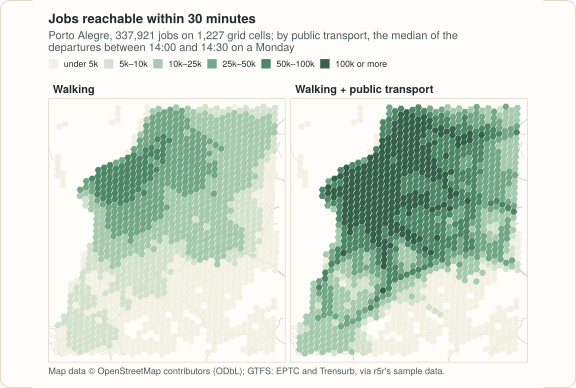

Example: mapping access to jobs and schools¶
How many jobs can people reach from where they live? This example answers that for Porto Alegre, on a grid of hexagonal cells, first walking and then walking with public transport. The code blocks make one script; the output shown under each is what it prints. The map at the end needs matplotlib.

site/figures/figures.R in the repository.The data¶
The sample data of Porto Alegre from the r5r project (an OpenStreetMap extract, the bus and train GTFS feeds, and a grid of 1,227 hexagonal cells with their population, jobs and schools), downloaded once into the temporary directory:
import datetime as dt
import tempfile
import urllib.request
from pathlib import Path
import pandas as pd
import peabiru
poa = Path(tempfile.gettempdir()) / "peabiru-poa"
poa.mkdir(exist_ok=True)
url = "https://raw.githubusercontent.com/ipea/r5r/v2.5.0/r-package/inst/extdata/poa/"
for name in ["poa_osm.pbf", "poa_eptc.zip", "poa_trensurb.zip",
"poa_hexgrid.csv", "poa_points_of_interest.csv"]:
if not (poa / name).exists():
urllib.request.urlretrieve(url + name, poa / name)
network = peabiru.build_network(poa)
grid = pd.read_csv(poa / "poa_hexgrid.csv")
print(grid.head().to_string())
print(grid[["population", "schools", "jobs"]].sum())
id lon lat population schools jobs healthcare
0 89a901291abffff -51.158246 -30.053846 0 0 1214.0 0.0
1 89a9012a3cfffff -51.211867 -30.100576 159 0 0.0 0.0
2 89a901295b7ffff -51.165206 -30.075442 1008 0 3.0 1.0
3 89a901284a3ffff -51.205354 -30.090046 92 0 0.0 0.0
4 89a9012809bffff -51.195754 -30.078387 577 0 9.0 0.0
population 812935.0
schools 194.0
jobs 337921.0
dtype: float64
Each cell is a point at its centre. The bus feed of the sample only has trips between late morning and early evening on weekdays, so public transport is routed from 14:00 on a Monday, over a 30-minute window of departures:
monday = dt.datetime(2019, 5, 13, 14, 0)
Travel times from one point¶
A first look: the travel time from one place, Farroupilha Park, to the
centre of every cell. Pairs that take longer than max_trip_duration are
left out of the result.
poi = pd.read_csv(poa / "poa_points_of_interest.csv")
park = poi[poi["id"] == "farroupilha_park"]
walk = peabiru.travel_time_matrix(network, park, grid, mode="WALK",
max_trip_duration=60)
transit = peabiru.travel_time_matrix(
network, park, grid, mode=["WALK", "TRANSIT"],
departure_datetime=monday, time_window=30, max_trip_duration=60,
)
for label, ttm in [("walking", walk), ("public transport", transit)]:
print(f"{label}: {len(ttm)} cells within an hour, "
f"median {ttm['travel_time_p50'].median():.0f} min")
walking: 268 cells within an hour, median 41 min
public transport: 1100 cells within an hour, median 39 min
Within an hour, public transport reaches about four times as many cells as walking does.
Jobs and schools within 30 minutes¶
accessibility() adds up, for each
origin, the opportunities at every destination reached within the cutoff
(the "step" decay function, the default). Five cells have no job count;
they count as zero, with a warning.
import warnings
with warnings.catch_warnings():
warnings.simplefilter("ignore") # the five cells without a job count
access = pd.concat([
peabiru.accessibility(
network, grid, grid, opportunities_colnames=["jobs", "schools"],
mode="WALK", cutoffs=30,
).assign(mode="walking"),
peabiru.accessibility(
network, grid, grid, opportunities_colnames=["jobs", "schools"],
mode=["WALK", "TRANSIT"], departure_datetime=monday,
time_window=30, cutoffs=30,
).assign(mode="public transport"),
], ignore_index=True)
print(access.head())
id opportunity percentile cutoff accessibility mode
0 89a901291abffff jobs 50 30 15978.0 walking
1 89a901291abffff schools 50 30 12.0 walking
2 89a9012a3cfffff jobs 50 30 641.0 walking
3 89a9012a3cfffff schools 50 30 0.0 walking
4 89a901295b7ffff jobs 50 30 1884.0 walking
Weighting each cell by the people who live there gives what the average resident reaches:
access = access.merge(grid[["id", "population"]], on="id")
average = access.groupby(["mode", "opportunity"]).apply(
lambda a: round((a["accessibility"] * a["population"]).sum() / a["population"].sum()),
include_groups=False,
)
print(average.unstack())
opportunity jobs schools
mode
public transport 67725 31
walking 21343 12
Public transport roughly triples both: about 21 thousand jobs and 12 schools within half an hour on foot, against 68 thousand jobs and 31 schools with the buses and the train.
A map¶
Each cell drawn as a dot at its centre, coloured by the jobs it reaches:
import matplotlib
matplotlib.use("Agg")
import matplotlib.pyplot as plt
jobs = access[access["opportunity"] == "jobs"].merge(grid[["id", "lon", "lat"]], on="id")
fig, axes = plt.subplots(1, 2, figsize=(10, 5), sharex=True, sharey=True)
for ax, (label, cells) in zip(axes, jobs.groupby("mode", sort=False)):
dots = ax.scatter(cells["lon"], cells["lat"], c=cells["accessibility"] / 1000,
s=9, cmap="Greens", vmin=0, vmax=200)
ax.set_title(label, loc="left", fontweight="bold")
ax.set_aspect(1 / 0.866) # degrees of longitude are shorter at 30° S
ax.set_axis_off()
fig.colorbar(dots, ax=axes, shrink=0.7, label="thousand jobs within 30 min")
fig.savefig("accessibility.png", dpi=110, bbox_inches="tight")
Variations¶
- Gradual access.
decay_function="logistic"(or"exponential","linear","fixed_exponential") weights every job by its travel time instead of counting those under a hard limit; see Accessibility. - Several cutoffs at once.
cutoffs=[15, 30, 45]returns one row per cutoff, from a single routing pass. - Percentiles. With
percentiles=[25, 50, 75], the accessibility of a good, a typical and a bad departure in the window.